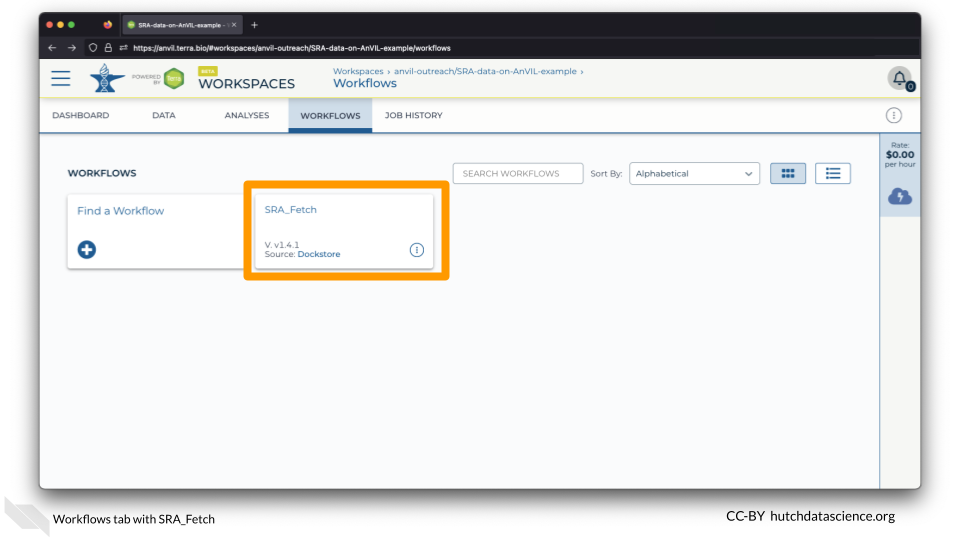
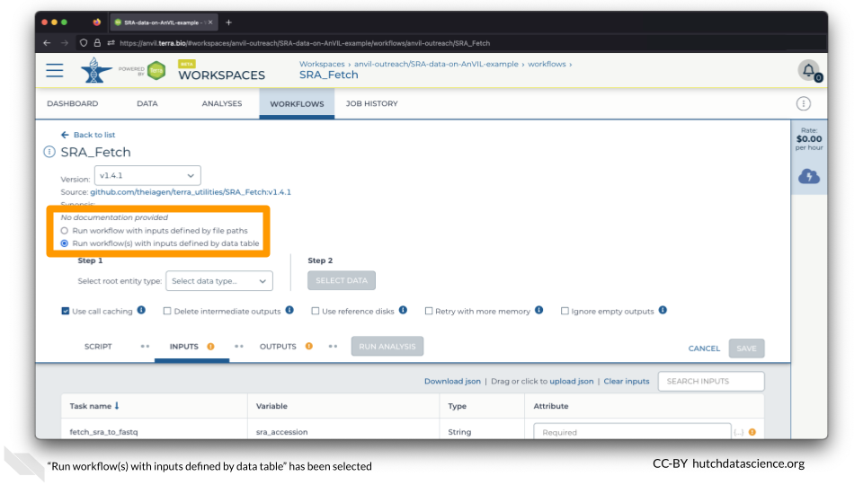
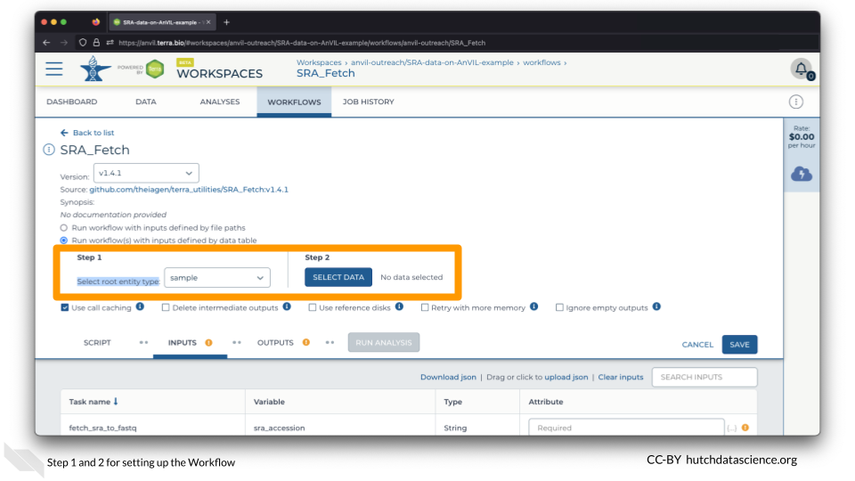
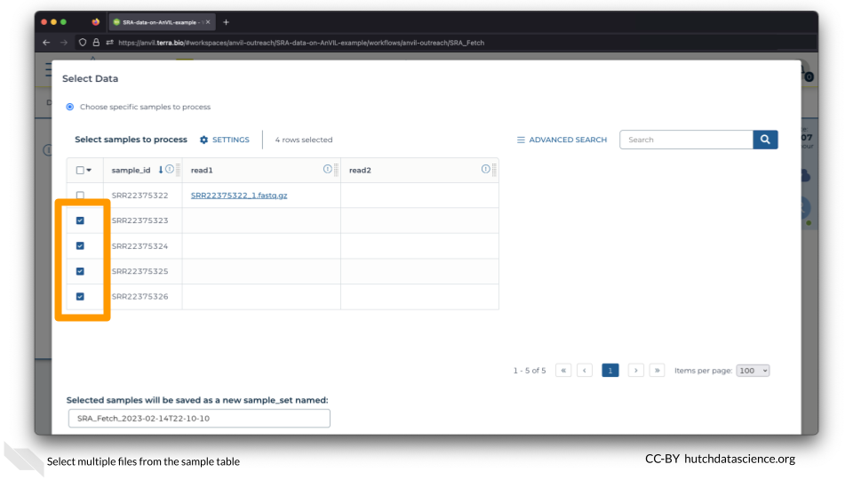
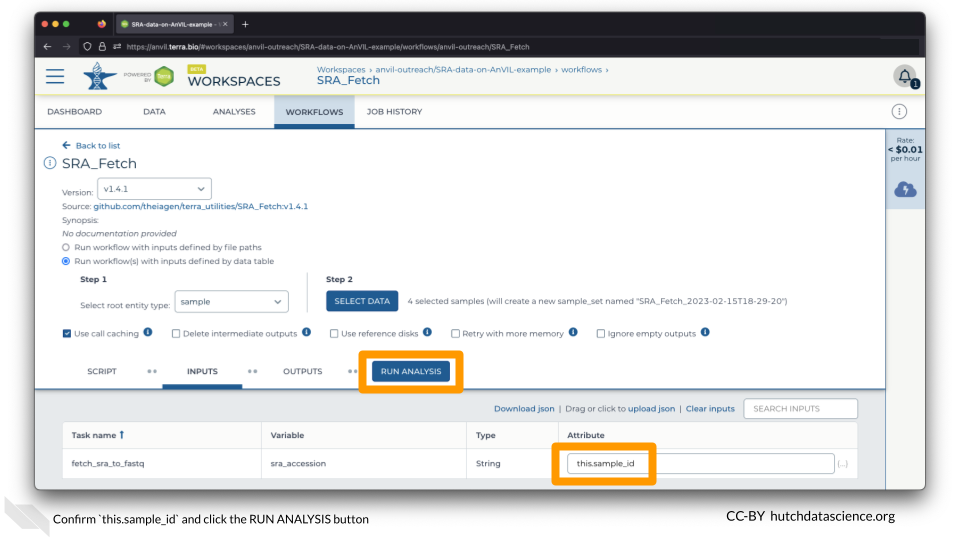
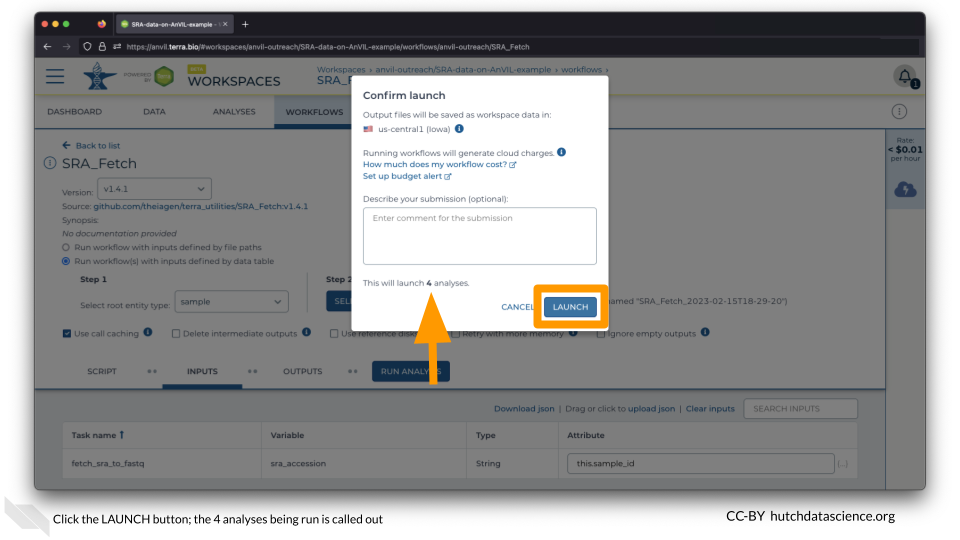
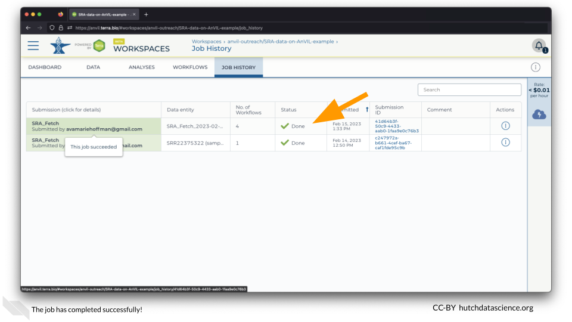

Chapter 2 Multiple SRA files
More than likely, you will be importing multiple files from SRA. Luckily, this is quite easy in AnVIL! In contrast to how your local computer works, The SRA Fetch Workflow imports files in parallel, so it does not take a substantially longer time.
2.1 Select Workflow Data
Navigate to the WORKFLOWS Tab and select the SRA_Fetch Workflow.

Select “Run workflow(s) with inputs defined by data table”.

Set the “Select root entity type” to “sample” and click SELECT DATA.

Select the second through fifth samples and click OK on the bottom right.

Ensure the “Attribute” is set to this.sample_id and click RUN ANALYSIS.

Click LAUNCH. You can close your browser or shut down your computer without interrupting the transfer.

The Workflow knows that you probably want to parallelize the import of your SRA files. This means that each import is happening at the same time. Notice how this workflow with multiple samples actually launched 4 different jobs/analyses! This means that AnVIL can help you process lots of files much faster than working with them one by one.
2.2 Check Workflow
Click on the JOB HISTORY tab. Different submissions are arranged by newest on the top. You should see that the job status is “Done”.
